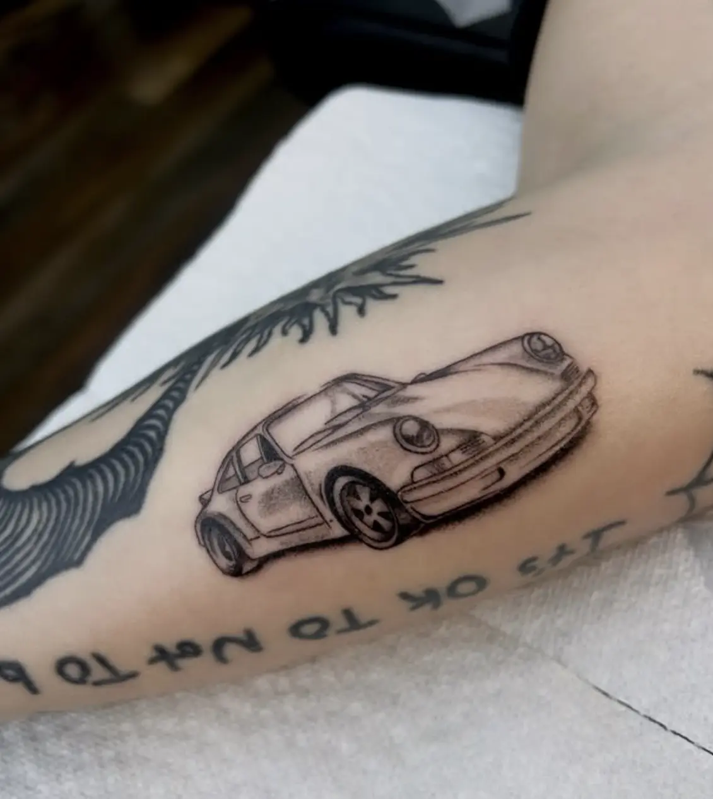
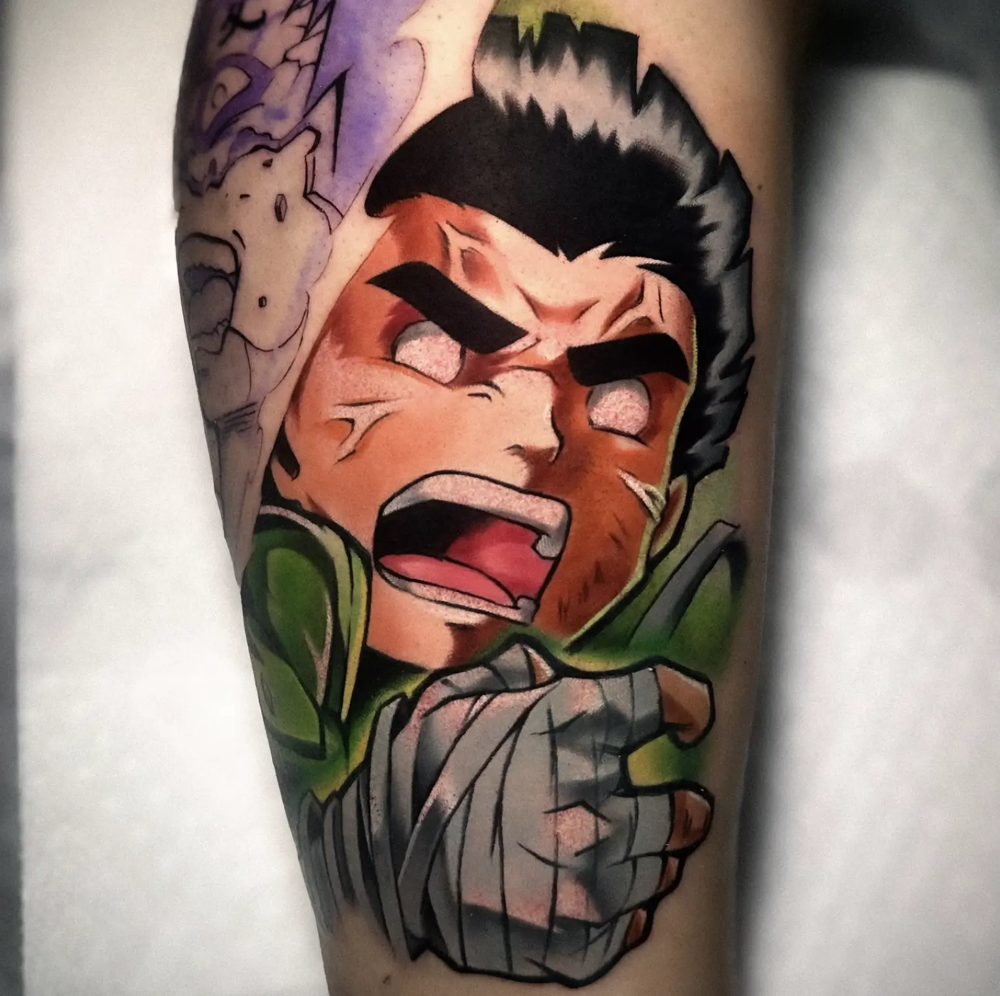
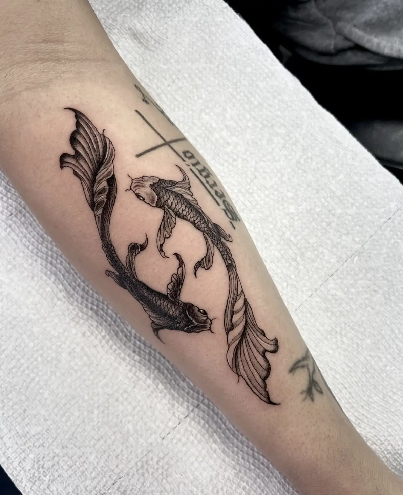
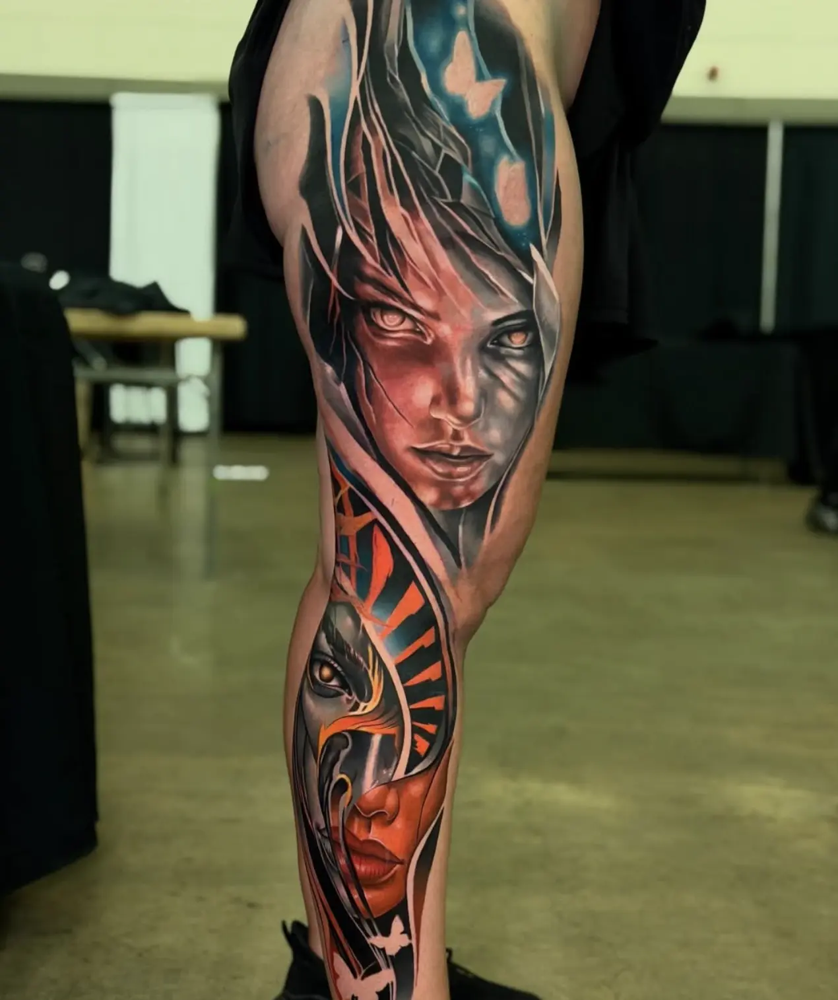
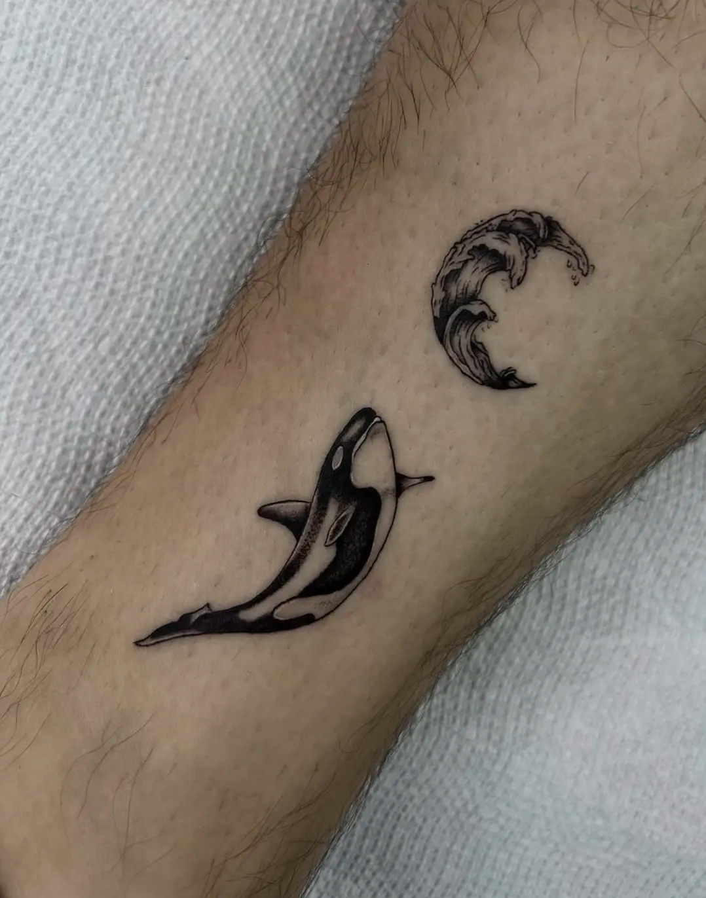

Curated Artists. Intentional Work.
Explore a curated group of tattoo artists, each known for their style, craft, and consistency.
Find your artistArtists, interested in being a part of the roster?
Request ConsiderationFeatured Artists.
Each artist featured has been carefully chosen for their style, experience, and commitment to quality.

JEJU
Rockville, MD
Black & grey and color realism tattoos designed with precision and intention.
[black / grey realism] [color realism]
View Artist

JDAIZ
Rockville, MD
Black & grey and color realism tattoos designed with precision and intention.
[black / grey realism] [color realism]
View Artist

RANDY
Rockville, MD
Black & grey and color realism tattoos designed with precision and intention.
[black / grey realism] [color realism]
View ArtistA more intentional way to find your artist.
Explore the roster
Browse a curated group of artists with distinct styles and specialties.
01
Find the right fit
Compare artistic direction, strengths, and visual identity.
02
Move forward with confidence
Submit your project and connect with the right artist.
03
This platform is designed to match clients with artists whose style and approach align from the beginning.
Why Curation Matters.
Finding a tattoo artist should be about more than availability. It should be about alignment, trust, and confidence in the outcome.
The goal is to create a better starting point for clients and a stronger context for the artists represented.
Built For Clients.
Curated artists, not endless listings
Instead of scrolling through hundreds of profiles with no clear direction, you’re presented with a refined selection of artists whose work has already been evaluated for quality, consistency, and creative identity. Every profile you see is there for a reason.
Better alignment from the start
Each artist is selected not just for skill, but for a clear and recognizable style. This makes it easier to find someone whose approach naturally fits your idea—reducing guesswork and avoiding mismatched expectations.
Quality-first experience
From the first interaction to the final piece, the focus is on delivering a high-level result. The platform prioritizes artists who care about execution, detail, and the overall experience—not just volume.
Clearer path to booking
Rather than reaching out blindly, the process is designed to help you move forward with intention. You understand the artist’s strengths, their type of work, and how they approach projects before you even inquire.
For Artists.
What Selected Artists Receive.
A dedicated artist profile
A personalized page designed to present your work, style, and approach in a way that feels cohesive and intentional.
Positioning within a curated roster
Your work is shown alongside other high-level artists, creating a stronger context and elevating how it is perceived.
Aligned client inquiries
Clients come through with a clearer understanding of your style and direction, leading to better-fit projects.
A more intentional presentation of your work
Less noise, more focus. Your work is not buried. It is given space to be understood.
The Standard.
A clear point of view
Work that feels recognizable, not interchangeable. A style that is developed, not borrowed.
Professional approach
Clear communication, respect for the process, and an understanding of the client experience.
Strong, consistent execution
Clean application, attention to detail, and a level of work that holds up across projects.
Long-term mindset
Artists focused on building a body of work—not just completing sessions.